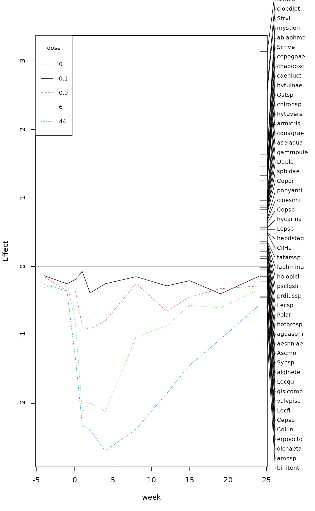

Principal Response Curves for Treatments with Repeated Observations
prc.RdPrincipal Response Curves (PRC) are a special case of
Redundancy Analysis (rda) for multivariate responses in
repeated observation design. They were originally suggested for
ecological communities. They should be easier to interpret than
traditional constrained ordination. They can also be used to study how
the effects of a factor A depend on the levels of a factor
B, that is A + A:B, in a multivariate response
experiment.
Usage
prc(response, treatment, time, ...)
# S3 method for class 'prc'
summary(object, axis = 1, scaling = "sites", const,
digits = 4, correlation = FALSE, ...)
# S3 method for class 'prc'
plot(x, species = TRUE, select, scaling = "symmetric",
axis = 1, correlation = FALSE, const, type = "l", xlab, ylab, ylim,
lty = 1:5, col = 1:6, pch, legpos, cex = 0.8, ...)Arguments
- response
Multivariate response data. Typically these are community (species) data. If the data are counts, they probably should be log transformed prior to the analysis.
- treatment
A factor for treatments.
- time
An unordered factor defining the observations times in the repeated design.
- object, x
An
prcresult object.- axis
Axis shown (only one axis can be selected).
- scaling
Scaling of species scores, identical to the
scalinginscores.rda.The type of scores can also be specified as one of
"none","sites","species", or"symmetric", which correspond to the values0,1,2, and3respectively. Argumentcorrelationcan be used in combination with these character descriptions to get the corresponding negative value.- const
General scaling constant for species scores (see
scores.rdafor details). Lower values will reduce the range of species scores, but will not influence the regression coefficients.- digits
Number of significant digits displayed.
- correlation
logical; if
scalingis a character description of the scaling type,correlationcan be used to select correlation-like scores for PCA. See argumentscalingfor details.- species
Display species scores.
- select
Vector to select displayed species. This can be a vector of indices or a logical vector which is
TRUEfor the selected species- type
Type of plot:
"l"for lines,"p"for points or"b"for both.- xlab, ylab
Text to replace default axis labels.
- ylim
Limits for the vertical axis.
- lty, col, pch
Line type, colour and plotting characters (defaults supplied).
- legpos
The position of the
legend. A guess is made if this is not supplied, andNAwill suppress legend.- cex
Character expansion for symbols and species labels.
- ...
Other parameters passed to functions.
Details
PRC is a special case of rda with a single
factor for treatment and a single factor for time points
in repeated observations. In vegan, the corresponding
rda model is defined as rda(response ~ treatment *
time + Condition(time)). Since the time appears twice in the
model formula, its main effects will be aliased, and only the main
effect of treatment and interaction terms are available, and will be
used in PRC. Instead of usual multivariate ordination diagrams, PRC
uses canonical (regression) coefficients and species scores for a
single axis. All that the current functions do is to provide a special
summary and plot methods that display the
rda results in the PRC fashion. The current version only
works with default contrasts (contr.treatment) in which
the coefficients are contrasts against the first level, and the levels
must be arranged so that the first level is the control (or a
baseline). If necessary, you must change the baseline level with
function relevel.
Function summary prints the species scores and the
coefficients. Function plot plots coefficients against
time using matplot, and has similar defaults.
The graph (and PRC) is meaningful only if the first treatment
level is the control, as the results are contrasts to the first level
when unordered factors are used. The plot also displays species scores
on the right vertical axis using function
linestack. Typically the number of species is so high
that not all can be displayed with the default settings, but users can
reduce character size or padding (air) in
linestack, or select only a subset of the
species. A legend will be displayed unless suppressed with
legpos = NA, and the functions tries to guess where to put the
legend if legpos is not supplied.
Value
The function is a special case of rda and returns its
result object (see cca.object). However, a special
summary and plot methods display returns differently
than in rda.
References
van den Brink, P.J. & ter Braak, C.J.F. (1999). Principal response curves: Analysis of time-dependent multivariate responses of biological community to stress. Environmental Toxicology and Chemistry, 18, 138–148.
Warning
The first level of treatment must be the
control: use function relevel to guarantee the correct
reference level. The current version will ignore user setting of
contrasts and always use treatment contrasts
(contr.treatment). The time must be an unordered
factor.
Examples
## Chlorpyrifos experiment and experimental design: Pesticide
## treatment in ditches (replicated) and followed over from 4 weeks
## before to 24 weeks after exposure
data(pyrifos)
week <- gl(11, 12, labels=c(-4, -1, 0.1, 1, 2, 4, 8, 12, 15, 19, 24))
dose <- factor(rep(c(0.1, 0, 0, 0.9, 0, 44, 6, 0.1, 44, 0.9, 0, 6), 11))
ditch <- gl(12, 1, length=132)
## IGNORE_RDIFF_BEGIN
## PRC
mod <- prc(pyrifos, dose, week)
mod # RDA
#> Call: prc(response = pyrifos, treatment = dose, time = week)
#>
#> Inertia Proportion Rank
#> Total 288.9920 1.0000
#> Conditional 63.3493 0.2192 10
#> Constrained 96.6837 0.3346 44
#> Unconstrained 128.9589 0.4462 77
#> Inertia is variance
#>
#> Eigenvalues for constrained axes:
#> RDA1 RDA2 RDA3 RDA4 RDA5 RDA6 RDA7 RDA8 RDA9 RDA10 RDA11
#> 25.282 8.297 6.044 4.766 4.148 3.857 3.587 3.334 3.087 2.551 2.466
#> RDA12 RDA13 RDA14 RDA15 RDA16 RDA17 RDA18 RDA19 RDA20 RDA21 RDA22
#> 2.209 2.129 1.941 1.799 1.622 1.579 1.440 1.398 1.284 1.211 1.133
#> RDA23 RDA24 RDA25 RDA26 RDA27 RDA28 RDA29 RDA30 RDA31 RDA32 RDA33
#> 1.001 0.923 0.862 0.788 0.750 0.712 0.685 0.611 0.584 0.537 0.516
#> RDA34 RDA35 RDA36 RDA37 RDA38 RDA39 RDA40 RDA41 RDA42 RDA43 RDA44
#> 0.442 0.417 0.404 0.368 0.340 0.339 0.306 0.279 0.271 0.205 0.179
#>
#> Eigenvalues for unconstrained axes:
#> PC1 PC2 PC3 PC4 PC5 PC6 PC7 PC8
#> 17.156 9.189 7.585 6.064 5.730 4.843 4.518 4.105
#> (Showing 8 of 77 unconstrained eigenvalues)
#>
summary(mod) # PRC
#>
#> Call:
#> prc(response = pyrifos, treatment = dose, time = week)
#> Species scores:
#> Simve Daplo Cerpu Alogu Aloco Alore Aloaf Copsp
#> 2.688099 1.464566 0.542739 0.280040 0.177019 0.315038 0.426524 1.169368
#> Ostsp Slyla Acrha Aloex Chysp Alona Plead Oxyte
#> 2.312186 -0.556899 0.105535 0.228092 0.095042 0.063689 0.138397 0.025401
#> Grate Copdi NauLa CilHa Strvi amosp Ascmo Synsp
#> 0.096840 1.428854 4.847070 0.895241 3.069709 -1.357663 0.069736 -0.026494
#> Squro Squmu Polar Kerqu Anufi Mytve Mytvi Mytmu
#> 0.264390 -0.452667 0.461989 0.495348 0.432767 0.074372 0.090928 0.105891
#> Lepsp Leppa Colob Colbi Colun Lecsp Lecqu Lecco
#> 0.998286 0.084809 -0.723051 -0.139569 -0.828338 0.472866 -0.088860 -0.290531
#> Leclu Lecfl Tripo Cepsp Monlo Monae Scalo Trilo
#> 0.049788 -0.408035 0.215234 -0.809597 -0.527913 -0.089948 -0.077192 -0.039086
#> Tripo.1 Tricy Trisp Tepat Rotne Notla Filsp Lopox
#> 0.246435 0.335400 0.078423 0.007719 0.143730 -0.114301 -0.168356 -0.030990
#> hydrspec bothrosp olchaeta erpoocto glsicomp alglhete hebdstag sphidae
#> -0.048698 0.398665 -1.165154 -0.901030 -0.144389 -0.073049 0.902223 1.463655
#> ansuvote armicris bathcont binitent gyraalbu hippcomp lymnstag lymnaes7
#> 0.140685 1.680010 0.073282 -1.950500 0.033051 0.404473 -0.263679 0.135150
#> physfont plbacorn popyanti radiovat radipere valvcris valvpisc hycarina
#> -0.026383 0.084761 1.272223 -0.019815 -0.625468 0.010579 -0.267577 1.044034
#> gammpule aselaqua proameri collembo caenhora caenluct caenrobu cloedipt
#> 1.526450 1.578743 0.116577 0.029906 5.767844 2.376188 0.126181 4.734035
#> cloesimi aeshniae libellae conagrae corident coripanz coripunc cymabons
#> 1.242207 0.212699 -0.081867 1.630574 0.013761 0.120439 -0.176746 0.046360
#> hesplinn hespsahl notoglau notomacu notoobli notoviri pacoconc pleaminu
#> -0.069465 0.033240 0.555201 0.050060 0.082356 0.215863 0.016709 0.071168
#> sigadist sigafall sigastri sigarasp colyfusc donacis6 gyrimari haliconf
#> 0.076479 -0.018364 0.060206 -0.277312 0.036493 -0.078608 0.010579 0.446911
#> haliflav haligruf haliobli herubrev hya_herm hyglpusi hyhyovat hypoplan
#> 0.044538 0.450146 0.131472 -0.128486 -0.322379 -0.011775 0.024196 0.014976
#> hyporusp hytuinae hytuvers laphminu noteclav rhantusp sialluta ablalong
#> 0.232042 2.316179 1.772351 0.632897 0.007912 0.067618 1.109341 0.014976
#> ablaphmo cltanerv malopisp mopetenu prdiussp pstavari chironsp crchirsp
#> 2.992695 0.075631 0.047658 0.008716 0.554911 0.082842 1.889916 0.016709
#> crclglat ditendsp mitegchl pachgarc pachgvit popegnub popedisp acriluce
#> 0.028953 0.083481 0.230629 -0.012187 -0.029907 0.224272 -0.069649 -0.007950
#> chclpige conescut cricotsp liesspec psclbarb psclgsli psclobvi psclplat
#> -0.008744 0.821036 0.121530 0.107387 -0.028639 0.601568 -0.362378 -0.052054
#> psclpsil pscladsp cladotsp laa_spec patanysp tatarssp zaa_spec anopmacu
#> 0.007339 0.005674 0.539894 0.034105 0.146807 0.669430 0.049949 -0.163731
#> cepogoae chaoobsc cucidae4 tabanusp agdasphr athrater cyrncren holodubi
#> 2.555403 2.442310 0.033240 -0.011601 0.271815 0.067618 0.071168 0.094754
#> holopici leceriae lilurhom monaangu mystazur mystloni oecefurv oecelacu
#> 0.611618 0.298633 0.009063 0.644295 0.033240 2.998460 0.536628 0.259064
#> triabico paponysp
#> 0.088915 0.097788
#>
#> Coefficients for dose + week:dose interaction
#> which are contrasts to dose 0
#> rows are dose, columns are week
#> -4 -1 0.1 1 2 4 8 12 15
#> 0.1 -0.07218 -0.1375 -0.1020 -0.04068 -0.2101 -0.1364 -0.08077 -0.1536 -0.1123
#> 0.9 -0.08106 -0.1935 -0.1936 -0.47699 -0.4977 -0.4306 -0.13532 -0.3548 -0.2408
#> 6 -0.16616 -0.1232 -0.4539 -1.15638 -1.0835 -1.1511 -0.56112 -0.4698 -0.3078
#> 44 -0.13979 -0.1958 -0.7308 -1.26088 -1.2978 -1.4627 -1.29139 -1.0081 -0.7819
#> 19 24
#> 0.1 -0.2163 -0.07835
#> 0.9 -0.1756 -0.15442
#> 6 -0.3293 -0.18227
#> 44 -0.5768 -0.31022
logabu <- colSums(pyrifos)
plot(mod, select = logabu > 100)

## IGNORE_RDIFF_END
## Ditches are randomized, we have a time series, and are only
## interested in the first axis
ctrl <- how(plots = Plots(strata = ditch,type = "free"),
within = Within(type = "series"), nperm = 99)
anova(mod, permutations = ctrl, first=TRUE)
#> Permutation test for rda under reduced model
#> Plots: ditch, plot permutation: free
#> Permutation: series
#> Number of permutations: 99
#>
#> Model: prc(response = pyrifos, treatment = dose, time = week)
#> Df Variance F Pr(>F)
#> RDA1 1 25.282 15.096 0.01 **
#> Residual 77 128.959
#> ---
#> Signif. codes: 0 ‘***’ 0.001 ‘**’ 0.01 ‘*’ 0.05 ‘.’ 0.1 ‘ ’ 1